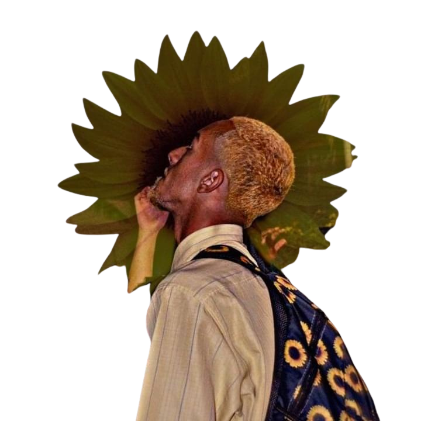
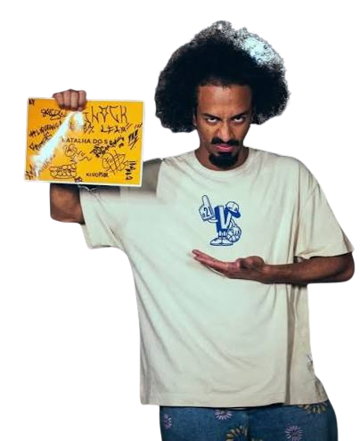

universo das batalhas de rua
-e-uma-das-principais-do-brasil-foto_-danilo-tamashiro-1iextrft6o4s6.jpg)
As batalhas de rima são um fenômeno cultural que transcende a música, tornando-se uma forma de expressão artística e social. Elas surgiram como uma maneira de jovens, muitas vezes marginalizados, expressarem suas experiências, frustrações e aspirações através da poesia improvisada. Cada batalha é um palco onde a criatividade, a inteligência e a habilidade verbal são testadas. porém em essência, o embate acalorado ainda usa de gatilhos como raiva reprimida, desejo por reconhecimento entre outros sentimentos que alavacam o atrito entre os MCs.
confrontos historicos
- Emicida vs. Bitello (2008)
- Marechal vs. Gutierrez (2006)
- Douglas Din vs. Koell (2012)
- Orochi vs. Alves (2015)
- Cesar vs. Dudu (2017)
- Salvador vs. Kant (2018)
- Jotapê vs. apollo (2023)

Barreto MC—ou o "Neguinho do Piratininga"—é a prova viva de que o freestyle de rua raiz nunca morre, ele só se renova. Se liga em como foi o corre do mano até fechar o ano de 2024, bem antes de ele cravar sua vaga e chocar o país no Duelo Nacional:
A Trajetória de Barreto MC
Barreto MC é a prova viva de que o freestyle de rua raiz nunca morre, ele só se renova. Veja como foi o corre do mano até fechar o ano de 2024, bem antes de ele cravar sua vaga e chocar o país no Duelo Nacional:
O Começo nas Ruas e a Escola de Guarulhos
O Barreto começou de baixo, gastando a sola do tênis nas batalhas de rua de São Paulo, sendo moldado principalmente pelas rodas tradicionais de Guarulhos. Desde o início, ele sempre trouxe uma carga muito forte de vivência, papo reto e poesia de periferia, conquistando o respeito da galera do underground na base do talento puro.
A Pausa e o Retorno no Underground
Como o corre da rima exige muito da mente e do bolso, o Barreto chegou a dar uma pausa nas batalhas por um tempo. Quando ele decidiu voltar, voltou com sangue nos olhos direto para o circuito de rua, reconquistando seu espaço degrau por degrau e mostrando uma maturidade lírica impressionante.
O Absurdo Ano de 2024
Se teve um ano que mudou a chave na carreira do Barreto, esse ano foi 2024. Ele simplesmente rimou um absurdo nas batalhas underground ao longo daqueles meses, e os vídeos dos seus improvisos estouraram nas redes sociais.
O ano de 2024 terminou com o Barreto consolidado como um dos nomes mais temidos e respeitados de São Paulo, preparando o terreno perfeito para o ano seguinte, onde ele conquistaria o estadual e faria história pisando no palco sagrado do Viaduto Santa Tereza.

A Consagração do "Barreto Sem Alma" (2025)
O ano de 2025 foi o período de maior transformação, redenção e consagração na carreira do Barreto MC. Foi justamente nessa época que ele ganhou o temido apelido de "Sem Alma", devido à sua postura fria, implacável e destruidora nos palcos.
O Surgimento do Personagem
No decorrer de 2025, a postura do Barreto mudou drasticamente. A internet o apelidou de "Sem Alma" porque ele subia no palco com um olhar frio, absorvia os ataques dos rivais e respondia com punchlines pesadíssimas sobre vivência, fome e sobrevivência. Ele desestruturava completamente o psicológico de quem estivesse na sua frente.
O Título do Estadual de São Paulo
Toda essa energia explodiu no Estadual de São Paulo de 2025. Enfrentando uma das chaves mais difíceis da história do torneio, o Barreto foi engolindo adversário por adversário. Na grande final, ele calou os críticos e se consagrou Campeão Estadual de SP, garantindo sua vaga oficial.
A Preparação para o Nacional
Ao fechar o ano de 2025, o Barreto alcançou o status de pesadelo de qualquer competidor do país. Esse amadurecimento e frieza cirúrgica foram a base que o deixou totalmente pronto para estrear no palco sagrado do Duelo de MCs Nacional, debaixo do Viaduto Santa Tereza.